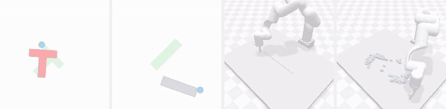
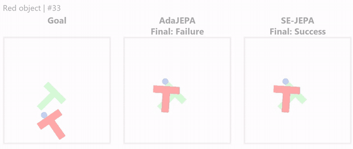
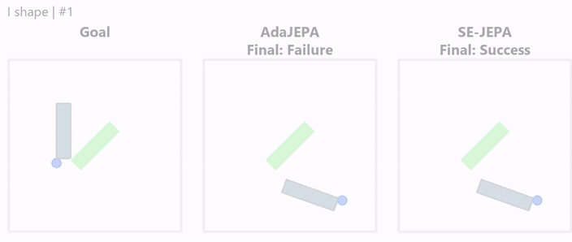
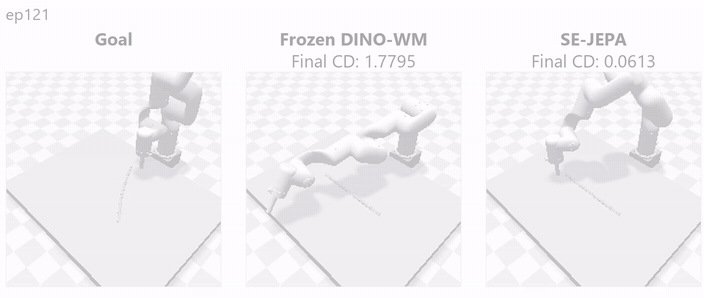
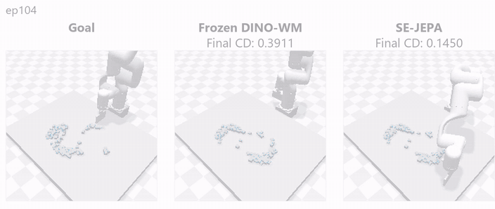
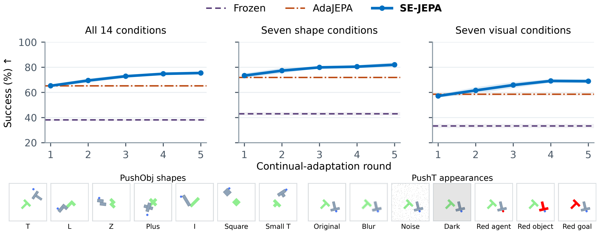
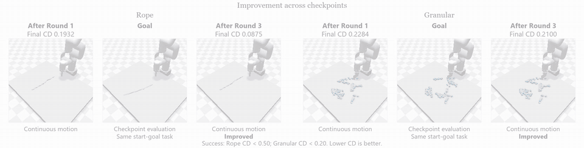

Abstract
Latent world models can adapt during a single task, but those updates may be specific to the episode. SE-JEPA uses the trajectories collected during deployment to train reusable predictors across episodes. It groups experience by predictive compatibility, trains a slow predictor for each domain through replay, and validates each predictor before making it available for reuse. When conditions recur, feedback from the current episode determines which predictor to use for planning. We evaluate this approach under visual and shape shifts in pushing tasks and on deformable-object manipulation.
TL;DR. SE-JEPA adapts to the current task and consolidates past trajectories into predictors it can reuse on future tasks.
Approach
Predictor selection. The model evaluates the base predictor and eligible slow predictors on the same observed transitions in a fixed reference representation. Familiar episodes and episodes with no eligible alternative use the base predictor.
Fast adaptation. After executing a block of actions, the model uses the observed transitions to update the encoder projection and predictor adapters inside the current episode.
Experience consolidation. At the end of an episode, validated trajectories can enter an existing replay buffer or accumulate toward a new domain. Slow predictors train on replayed trajectories, and validation determines when they become eligible for selection.

Key Equations
Replay training
The slow predictor learns from its domain’s replay buffer. x is a short observation-and-action history, and z+ is the next observation embedding.
Trajectory validation
The candidate and the frozen base predictor use the same recorded actions. A lower ratio means the candidate predicts the trajectory more accurately relative to the base.
Predictor retrieval
During the first three replans of an unfamiliar episode, the base and eligible slow predictors compete on the transitions observed so far.
Planning with SE-JEPA
SE-JEPA encodes the current observation and goal, predicts the effects of candidate action sequences in latent space, and executes the first block of the selected sequence. It replans after observing the result. We report pushing results for gradient descent (GD) and the cross-entropy method (CEM).
Planning Results
The paper’s CEM comparison covers seven PushObj shapes, six PushT visual shifts, and two deformable-object tasks. The PushObj unseen subset contains the I, square, and small T shapes. The PushT color subset contains three recoloring conditions.
| Method | PushObj | PushT visual shifts | Rope | Granular | ||||
|---|---|---|---|---|---|---|---|---|
| All-7 (%) | Unseen (%) | Replans ↓ | All-6 (%) | Color-3 (%) | Replans ↓ | CD ↓ | CD ↓ | |
| DreamerV3 | 7.1 | 5.3 | 28.36 | 5.7 | 0.0 | 28.91 | 2.49 | 1.05 |
| IRIS | 2.9 | 2.7 | 29.37 | 6.0 | 6.7 | 28.85 | 1.11 | 0.37 |
| R3M | 18.9 | 18.0 | 25.49 | 21.7 | 27.3 | 25.00 | 1.13 | 0.95 |
| DINO CLS | 14.9 | 10.0 | 26.77 | 34.7 | 35.3 | 22.38 | 0.84 | 0.79 |
| DINO-WM | 62.0 | 46.0 | 16.15 | 33.0 | 37.3 | 22.05 | 0.491 | 0.301 |
| LeWM | 64.0 | 50.0 | 16.28 | 40.3 | 16.0 | 21.45 | 0.786 | 0.322 |
| DDP-WM | 57.7 | 43.3 | 17.59 | 52.7 | 57.3 | 18.39 | 0.677 | 0.259 |
| Frozen (pretrained) | 43.8 | 36.2 | 21.08 | 48.3 | 33.6 | 20.10 | 0.491 | 0.301 |
| AdaJEPA | 70.4 | 54.4 | 16.02 | 60.2 | 42.2 | 18.46 | 0.629 | 0.304 |
| SE-JEPA | 80.4 | 73.1 | 12.99 | 76.1 | 65.2 | 14.46 | 0.252 | 0.220 |
Replans are averaged with a cap of 30 for unsuccessful episodes. CD is final Chamfer distance. The SE-JEPA PushObj results above are from the fifth online round.
Held-Out Planning
On goals excluded from learning, the paper evaluates SE-JEPA with memory writes disabled and retrieval and fast adaptation enabled. Success gains over AdaJEPA are 17.11 percentage points (GD) and 15.41 (CEM) on unseen PushObj shapes, and 18.74 (GD) and 15.89 (CEM) across six PushT visual shifts.
Qualitative Rollouts
Each set shows the goal, a baseline rollout, and the SE-JEPA rollout from the same start state. The cases below illustrate individual outcomes.
PushT

PushObj

Rope

Granular

Evaluating Continual Learning
With a shared memory across 14 recurring shape and visual conditions, combined online success rises from 65.3% to 75.5% over five deployment rounds. Shape-task success rises from 73.4% to 82.0%, and visual-task success from 57.2% to 68.9%.

Mixed Rope and Granular Tasks
In a separate CEM experiment, tasks alternate between Rope and Granular with 50 new goals per material in each round. A shared rope-pretrained DINO-WM serves as the base model. Fast adaptation remains enabled.
| Round | Rope CD ↓ | Granular CD ↓ | Purity (%) | Retrieval (%) |
|---|---|---|---|---|
| 1 | 0.598 | 0.471 | 100 | 96.6 |
| 2 | 0.452 | 0.369 | 100 | 100.0 |
| 3 | 0.412 | 0.355 | 100 | 100.0 |
Checkpoint Comparisons
In these archived rollout examples, the same start and goal are rerun with saved predictors from Rounds 1 and 3. Both Rope runs meet the success threshold. The Granular example improves from 0.2284 to 0.2100 and stays above its 0.20 success threshold.

Data & Sources
The quantitative results and equations above are from SE-JEPA: Self-Evolving Latent World Models. The files below contain archived evaluation summaries and the records used for illustrative rollouts.